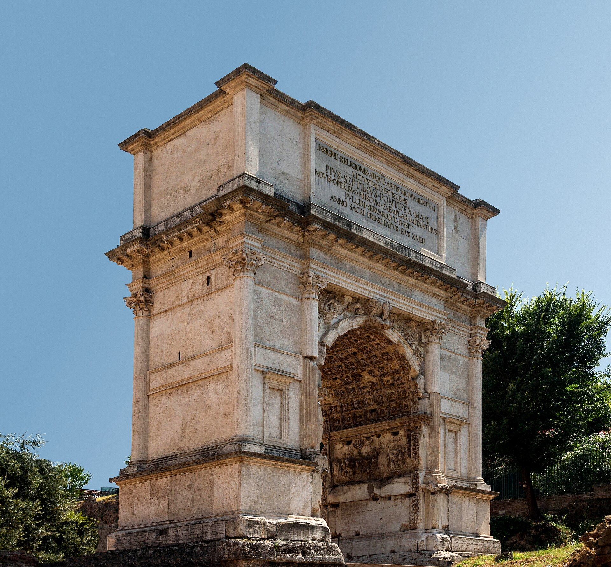
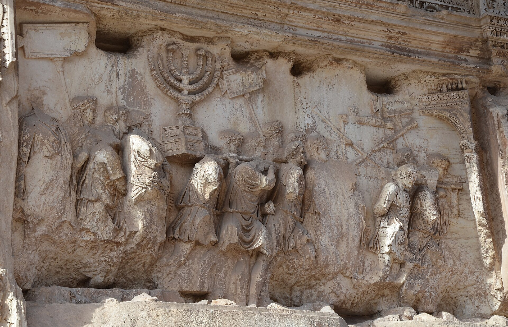
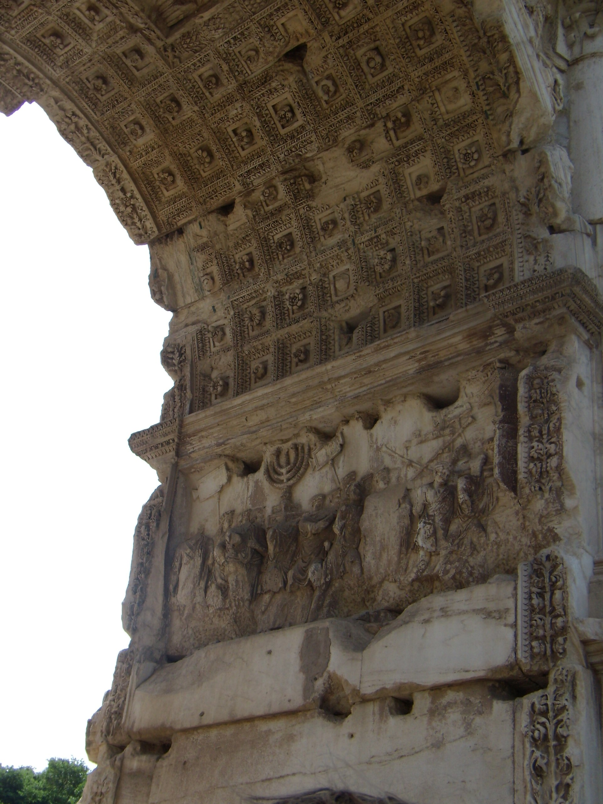

Triumphal arch
A freestanding Roman monument built to honor a ruler or celebrate a military victory. It often placed an inscription and carved scenes directly in the path of people walking through the city.
Artist unknown · Rome, after 81 C.E. · Via Sacra, Roman Forum


The relief turns the passage into a record of the triumph: Roman soldiers carry treasures seized from the Temple in Jerusalem, including the seven-branched menorah.
After the emperor Titus died in 81 C.E., his brother and successor Domitian completed this arch on the Via Sacra, Rome’s ceremonial road through the Forum. The inscription above the opening dedicates it to the deified Titus. That word matters: the building does not simply remember a general. It presents him as a god and turns military victory into a permanent public message.
The arch marks the Roman victory over Jerusalem in 70 C.E. Its two great interior reliefs show the triumph that followed: one shows Titus in a four-horse chariot; the other shows soldiers carrying objects looted from the Temple in Jerusalem. The monument is an extraordinary work of Roman art, but it is also a record of conquest, displacement, and loss.
From a distance, the design is concentrated and easy to read: one large opening, attached columns, a heavy horizontal beam, then a tall rectangular attic for the inscription. Walk through it and the building changes scale. The passage becomes a carved theater where figures overlap, turn, and press forward in deep relief.
A freestanding Roman monument built to honor a ruler or celebrate a military victory. It often placed an inscription and carved scenes directly in the path of people walking through the city.
Sculpture carved into a flat background. The forms project from the wall, but remain attached to it. Deep relief can make a crowded scene feel as if it moves into real space.
Older building parts or sculpture reused in a newer monument. This arch does not use spolia, but the Arch of Constantine later uses earlier imperial reliefs as spolia to claim Rome’s past.

The ceiling is divided into a precise grid of coffers. Under it, the relief reads as a moving procession, joining exact architectural order to an image of victory and spoils.
In the Early Medieval deck, you will meet the Arch of Constantine, which uses the visual language established here: a freestanding triumphal arch, a central passage, an inscription in the attic, attached columns, and carved imperial reliefs. Constantine’s designers then make a pointed political choice: they set earlier Roman reliefs into their new monument as spolia, borrowing the authority of earlier emperors.